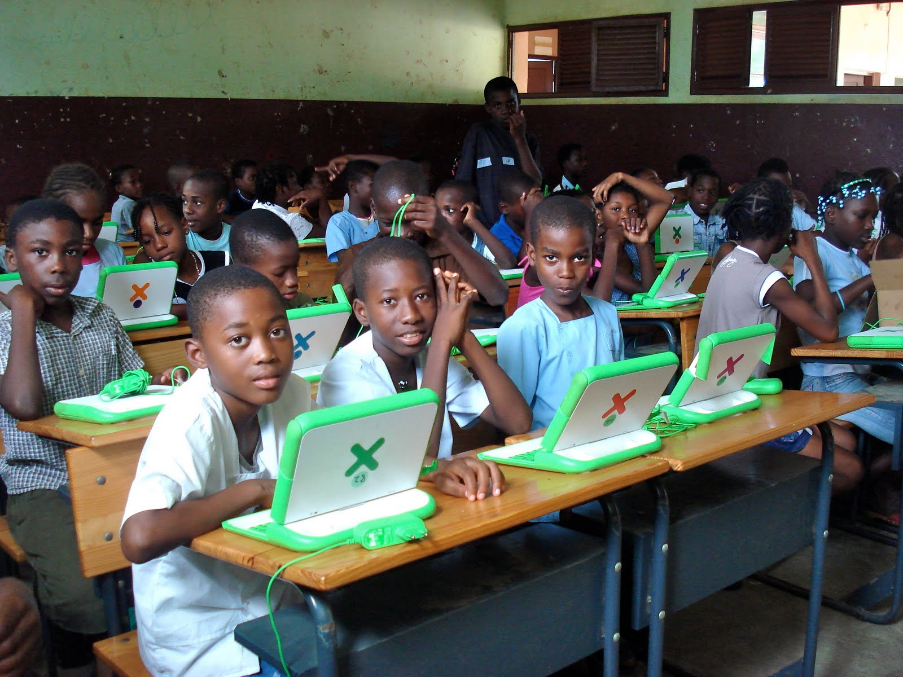

In our rapidly evolving digital world, the power of technology in shaping futures cannot be overstated. It's a beacon of hope and a vessel of opportunity, especially in the realm of education. Yet, this beacon remains dim for many in rural areas, where access to modern technology is often limited or non-existent. This is a gap that needs bridging, and it's precisely what Rural Edu strives to achieve.
Rural Edu is a beacon of change, focusing on introducing and integrating technology into the fabric of rural education. By supporting Rural Edu, you are not just donating; you are investing in the future of countless young students. Your contributions are pivotal in equipping these learners with the necessary technological tools and resources that can unlock their potential and broaden their horizons.
Imagine a classroom in a remote village, transformed by the power of technology. Where once sat outdated textbooks, now lies interactive digital content. Where isolation once hindered learning, now there's a window to a world of knowledge. This transformation is what your donation can achieve. It's about leveling the playing field, ensuring that every child, regardless of their zip code, has equal access to the educational tools they need to succeed in this digital age.

Your support can be the catalyst for a lifelong journey of learning and discovery for these students. It's about creating an equitable educational landscape, where the digital divide does not dictate a child's future. Every donation, big or small, is a step towards this goal.
We invite you to join us in this noble endeavor. Make a donation to Rural Edu today. Your contribution is more than just a gift; it's a statement that every child deserves a chance to shine in the digital world. Let's work together to light up these young minds and open doors to endless possibilities. Be a part of this transformative journey, and help us ensure that no child is left behind in the digital revolution.